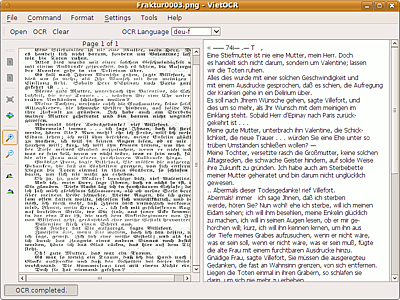
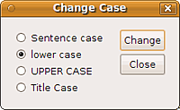
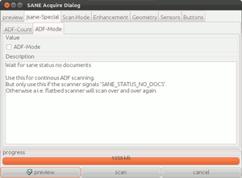

vietOCR
Dieser Artikel wurde für die folgenden Ubuntu-Versionen getestet:
Dieser Artikel ist mit keiner aktuell unterstützten Ubuntu-Version getestet! Bitte diesen Artikel testen und das getestet-Tag entsprechend anpassen.
Zum Verständnis dieses Artikels sind folgende Seiten hilfreich:
VietOCR  ist ein ursprünglich für vietnamesische Sprachunterstützung konzipiertes Java-Programm für das OCR-Programm tesseract-ocr. Die grundlegenden Funktionen des Frontends können aber mit jeder installierten tesseract-ocr-Sprache verwendet werden. Ab Version 1.9 ist auch eine Rechtschreibprüfung via Hunspell vorgesehen. Ab Version 2.0.3 (mit Tesseract 2.0x) bzw. 3.2 (mit tesseract 3.0x) ist zudem eine Scan-Funktion integriert, mit der auf SANE-fähige Scanner zugegriffen werden kann (funktioniert allerdings nur auf 32-bit-Systemen!).
ist ein ursprünglich für vietnamesische Sprachunterstützung konzipiertes Java-Programm für das OCR-Programm tesseract-ocr. Die grundlegenden Funktionen des Frontends können aber mit jeder installierten tesseract-ocr-Sprache verwendet werden. Ab Version 1.9 ist auch eine Rechtschreibprüfung via Hunspell vorgesehen. Ab Version 2.0.3 (mit Tesseract 2.0x) bzw. 3.2 (mit tesseract 3.0x) ist zudem eine Scan-Funktion integriert, mit der auf SANE-fähige Scanner zugegriffen werden kann (funktioniert allerdings nur auf 32-bit-Systemen!).
Voraussetzungen¶
Voraussetzung für die Nutzung ist eine Java-Laufzeitumgebung (JRE) in Version 6 (1.6) oder höher. Zumindest unter Ubuntu 12.04 funktioniert das freie OpenJDK.
Installation¶
VietOCR ist nicht in den Paketquellen vorhanden. Das Programm kann von der Projektseite  heruntergeladen werden.
heruntergeladen werden.
Hinweis!
Fremdsoftware kann das System gefährden.
Das Archiv entpacken[1]. Außerdem wird natürlich eine tesseract-ocr-Installation mit den gewünschten Sprachpaketen benötigt. Ab Version 3.0 ist die Software für tesseract-ocr 3.0x konzipiert, die erst für 12.04 Precise Pangolin in den Paketquellen vorliegt. Damit können allerdings auch Texte in Spalten erfolgreich ausgelesen werden.
Außerdem ist die Installation der Pakete
ghostscript (zur Unterstützung von PDF)
hunspell (sowie die benötigten Wörterbuchpakete, ab Version 1.9 möglich)
 mit apturl
mit apturl
Paketliste zum Kopieren:
sudo apt-get install ghostscript hunspell
sudo aptitude install ghostscript hunspell
sinnvoll.
Die Datei VietOCR.jar[4] ausführbar machen, der Programmstart erfolgt im im Terminal[5] im Download-Verzeichnis mit
java -jar VietOCR.jar
Falls es dabei zu Problemen mit "Memory-Leaks" kommt, kann es auch mit der mitgelieferten Batchdatei ocr.bat aufgerufen werden. Die Datei dafür ausführbar machen, und mit
./ocr.bat
aufrufen.
Komfortabler ist es, sich einen Eintrag im Hauptmenü[6] anzulegen, und das Programm so zu starten. Dazu in einem Editor[7] ein kleines Skript mit folgendem Inhalt erstellen:
1 2 3 | #!/bin/bash cd /Pfad/zum/Verzeichnis/von/VietOCR.jar/ java -jar VietOCR.jar ## oder ocr.bat |
Das Skript unter einem aussagekräftigen Namen, z.B. vietOCR.sh, abspeichern und ausführbar[4] machen. Als Startbefehl im Hauptmenü dann
/PFAD/ZU/vietOCR.sh
angeben.
Start bei mehreren Java-Versionen¶
Wenn mehrere Java-Versionen installiert sind, kann man entweder über das Festlegen der Alternativ-Systeme Sun Java zur bevorzugten Version machen, oder, wenn man sonst die openjdk-Version verwenden möchte, das Programm mit dem dezidierten Aufruf der Sun-Version, also z.B. mit
/usr/lib/jvm/java-6-sun/jre/bin/java -jar VietOCR.jar
starten; das lässt sich natürlich auch im Starter-Skript so festlegen..

Konfiguration¶
Zunächst muss in "Settings -> Options" im Reiter "Tesseract" der Pfad zum Programm angegeben werden (bei einer Standardinstallation /usr/bin; das Archiv liefert nur eine .exe-Datei mit). Unter "Watch" können das verwendete Vorlagen- und Ausgabenverzeichnis festgelegt werden; die Funktion zu "DangAmbig.txt" scheint nur für vietnamesische Zeichensätze verwendbar zu sein; theoretisch lässt sich eine zu verwendende DangAmbigs-Datei festlegen (in der Datei werden leicht zu verwechselnde Zeichen aufgelistet; allerdings ist die Standardversion nicht als <langid>.DangAmbigs.txt abgespeichert, sondern ohne die Erweiterung .txt).
Die Rechtschreibprüfung (ab 1.9) greift auf Hunspell zurück; die Wörterbuch-Dateien werden im Verzeichnis /PFAD/ZU/VietOCR3/dict erwartet, dort sind standardmäßig ein amerikanisches und ein vietnamesisches Wörterbuch abgelegt. Die benötigten Wörterbuch-Paare *.aff/*.dic (standardmäßig in /usr/share/hunspell/ zu finden) sollten dorthin kopiert, oder per symbolischer Verknüpfung eingebunden werden. Für "alte" Vorlagen in deutscher Sprache empfiehlt sich die Verwendung des Wörterbuches der alten Rechtschreibung! Außerdem existiert ein "eigenes" Wörterbuch, user.dict, in das häufig verwendete, aber nicht in den Standardverzeichnissen aufgelistete Wörter aufgenommen werden können.
Falls der Scanner nicht angesprochen wird, und es nur eine Fehlermeldung gibt, hilft unter 32-bit-Systemen das Erstellen einer symbolische Verknüpfung:
sudo ln -s /usr/lib/i386-linux-gnu/libsane.so.1 /usr/lib/libsane.so
Benutzung¶
VietOCR unterstützt, anders als tesseract-ocr selbst, auch andere Dateiformate als .tif (.pdf, .tif, .jpg, .gif, .png, .bmp); für .pdf muss das Paket ghostscript installiert sein. Die Dateien werden über "File -> Open..." oder die "Open"-Schaltfläche eingelesen, sie werden dann in der linken Fensterhälfte sichtbar. Dort können die Ansichtsgröße verändert, das Dokument auch gedreht und in mehrseitigen Dokumenten auch "geblättert" werden. Nach Einstellung der gewünschten Sprache erfolgt die Texterkennung des angezeigten Dokuments über die "OCR"-Schaltfläche (es können auch gleich alle Seiten bearbeitet werden: "Commands -> OCR All Pages"). "Clear" entfernt die Texterkennung der aktuellen Bearbeitung. Das Öffnen eines neuen Dokuments entfernt das alte, die Texterkennung bleibt allerdings erhalten; so können Texterkennungen aus weiteren Vorlagen an den bereits bestehenden Text angeschlossen werden.
tesseract-ocr versucht oft, auch aus Grafiken und Fotos "Text" zu extrahieren. Um das zu umgehen, kann der jeweils zu erkennenden Bereich in VietOCR auch bei gedrückter  -Taste aufzogen, und dann die Erkennung gestartet werden. Diese Methode ist auch bei verschachtelten Text/Bild-Darstellungen oder Tabellen sinnvoll.
-Taste aufzogen, und dann die Erkennung gestartet werden. Diese Methode ist auch bei verschachtelten Text/Bild-Darstellungen oder Tabellen sinnvoll.
 Das Ergebnis wird in der rechten Fensterhälfte angezeigt, und kann dort direkt bearbeitet werden. Die verwendete Anzeige-Schriftart und -größe lässt sich in "Format -> Font..." festlegen; für die Speicherung ist das allerdings nicht relevant. Über die ABC-Taste (ab Version 1.9) kann die Rechtschreibprüfung aufgerufen werden. Die unbekannten Wörter werden dann mit einer roten Zick-Zack-Linie unterstrichen, und können so schnell erkannt, und ggf. korrigiert werden.
Mit "Change case" lässt sich in der Ausgabe die Groß/Kleinschreibung anpassen ("Sentence case": Erster Buchstabe im Satz wird groß geschrieben, "lower case": alle Wörter werden klein geschrieben, "UPPER CASE": nur Großbuchstaben, "Title Case": der erste Buchstabe jedes Wortes wird groß geschrieben). Mit "Remove line breaks" können die standardmäßig von tesseract-ocr erzeugten Zeilenumbrüche entfernt werden. Die Daten werden immer im einfachen Text-Format gespeichert.
Unter "Tools" lassen sich als kleine Zugabe .tif- und .pdf-Dateien zusammenfügen (leider funktioniert das zumindest unter Version 1.4 nicht zufriedenstellend), .pdf-Dateien auch aufspalten (Eingabe- und Ausgabepfad angeben; die .pdfs lassen sich nach Seiten aufteilen, oder in Dateien mit bestimmten Seitenzahlen).
Einige der weiteren Möglichkeiten des Programms sind nur für vietnamesische Texte nutzbar.

Scan-Funktion¶
Ab Version 2.0.3 kann VietOCR direkt auf SANE-fähige Scanner zugreifen; ggf muss allerdings zunächst in /usr/lib ein symbolischer Link mit dem Namen libsane.so auf /usr/lib/libsane.so.VERSION erstellt werden.
Beim Aufruf über die "Scan"-Schaltfläche öffnet sich ein Fenster mit umfangreichen Einstellmöglichkeiten, die je nach angeschlossenem Scanner unterschiedliche Möglichkeiten liefert (siehe SANE). Es ist u.a. ein Vorschau-Scan ("Preview") möglich, im Reiter "Scan Mode" lassen sich dies Scan-Optionen festlegen, in "Geometry" der Ausschnitt, der gescannt werden soll.
Die dann über die "scan"-Schaltfläche erstellten Vorlagen lassen sich dann wie anderweitig importierte Dateien bearbeiten, und auch mit bereits vorhandenen Vorlagen kombinieren.
Eine Fehlermeldung
uk.co.mmscomputing.device.sane.SaneIOException: Invalid argument at uk.co.mmscomputing.device.sane.jsane.getOptionDescriptor(Native Method) at uk.co.mmscomputing.device.sane.SaneDevice.getOptionDescriptor(SaneDevice.java:94) at uk.co.mmscomputing.device.sane.SaneDevice.setOption(SaneDevice.java:143) at uk.co.mmscomputing.device.sane.SaneDevice.setResolution(SaneDevice.java:175) at net.sourceforge.vietocr.GuiWithScan.update(Unknown Source) at uk.co.mmscomputing.device.scanner.Scanner.fireListenerUpdate(Scanner.java:61) at uk.co.mmscomputing.device.sane.SaneScanner.negotiateOptions(SaneScanner.java:61) at uk.co.mmscomputing.device.sane.jsane.negotiateOptions(jsane.java:109) at uk.co.mmscomputing.device.sane.SaneDevice.acquire(SaneDevice.java:641) at uk.co.mmscomputing.device.sane.jsane$1.run(jsane.java:96)
scheint keinen Einfluss auf die Funktionsfähigkeit zu haben. Allerdings funktioniert die Scan-Funktion auf 64-bit-Systemen nicht.
Alternativen¶
Texterkennung
 Übersichtsseite
ÜbersichtsseiteYAGF - umfangreiches Frontend für Cuneiform-Linux mit Scanner-Integration via XSane
cuneiform-qt - vergleichbares einfacheres Programm, das ebenfalls auf Cuneiform-Linux als OCR-Engine zurückgreift
OcrGui - OCR-Programm, das neben tesseract-ocr auch GOCR als OCR-Engine verwenden kann; noch in relativ frühem Entwicklungsstadium
- Erstellt mit Inyoka
-
 2004 – 2017 ubuntuusers.de • Einige Rechte vorbehalten
2004 – 2017 ubuntuusers.de • Einige Rechte vorbehalten
Lizenz • Kontakt • Datenschutz • Impressum • Serverstatus -
Serverhousing gespendet von